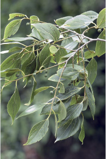
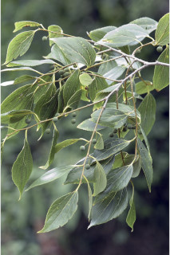

Trees ca. 20 m tall.
ಅಂದಾಜು 20 ಮೀ. ಎತ್ತರದವರೆಗಿನ ಮರಗಳು.
Trees ca. 20 m tall.
மரங்கள் 20 மீ. உயரம் வரை வளரக்கூடியது.
Bark grey, smooth, lenticellate; blaze whitish with purplish speckles.
ತೊಗಟೆ ಬೂದು ಬಣ್ಣದಲ್ಲಿದ್ದು,ನಯವಾಗಿರುತ್ತದೆ ಮತ್ತುವಾಯುವಿನಿಮಯ ಬೆಂಡು ರಂಧ್ರಗಳ ಸಮೇತವಿರುತ್ತವೆ;ಕಚ್ಚು ಮಾಡಿದ ಜಾಗ ಬಿಳಿ ಛಾಯೆ ಹೊಂದಿದ್ದು ಕೆನ್ನೀಲಿ ಬಣ್ಣದ ಮಚ್ಚೆಗಳ ಸಮೇತವಿರುತ್ತದೆ.
Bark grey, smooth, lenticellate; blaze whitish with purplish speckles.
மரத்தின் பட்டை சாம்பல் நிறமானது, வழுவழுப்பானது, பட்டைத்துளைகள் (லெண்டிசெல்லேட்) உடையது; உள்பட்டை வெள்ளை நிறமானது மற்றும் பர்புள் நிறமானது புள்ளிகளுடையது.
Young branchlets terete, tawny pubescent.
ಕಿರುಕೊಂಬೆಗಳು ದುಂಡಾಗಿದ್ದು,ಕಂದು ಮಿಶ್ರಿತ ಹಳದಿ ಬಣ್ಣದ ಮೃದುತುಪ್ಪಳದಿಂದ ಕೂಡಿರುತ್ತವೆ.
Young branchlets terete, tawny pubescent.
சிறியநுனிக்கிளைகள் குறுக்குவெட்டுத் தோற்றத்தில் வளையமானது, மஞ்சள்-ப்ரவுன் நிறமான உரோமங்களுடையது.
Leaves simple, alternate, distichous; stipules lateral, caducous and leaving scar; petiole up to 0.8 cm long, canaliculate above, pubescent; lamina 3.5-10 x 1.2-4 cm, ovate -lanceolate, apex acuminate, base asymmetric, margin serrate, membranous, pubescent beneath; 3-nerved at base; midrib flat or slightly raised above; secondary_nerves ca. 4 pairs; tertiary_nerves distantly horizontally percurrent.
ಎಲೆಗಳು ಸರಳವಾಗಿದ್ದು ಪರ್ಯಾಯ ಮಾದರಿಯಲ್ಲಿ ಜೋಡಣೆಯಾಗಿದ್ದು, ಕಾಂಡದ ಎರಡೂ ಕಡೆ ಎದುರು ಬದರಿನ ಲಂಬ ಸಾಲಿನಲ್ಲಿರುತ್ತವೆ;ಕಾವಿನೆಲೆಗಳು ಪಾರ್ಶ್ವದಲ್ಲಿದ್ದು ಮೃದುತುಪ್ಪಳದಿಂದ ಕೂಡಿರುತ್ತವೆ,ಉದುರುವ ಮಾದರಿಯಲ್ಲಿದ್ದು ಉದುರಿ ಹೋದ ನಂತರ ಗುರುತುಗಳನ್ನು ಉಳಿಸುತ್ತವೆ;ತೊಟ್ಟುಗಳು 0.8 ಸೆಂ.ಮೀ.ವರೆಗಿನ ಉದ್ದವಿದ್ದು, ಮೇಲ್ಭಾಗದಲ್ಲಿ ಕಾಲುವೆಗೆರೆ ಸಮೇತವಿರುತ್ತವೆ, ಮೃದುತುಪ್ಪಳದಿಂದ ಕೂಡಿರುತ್ತವೆ ;ಪತ್ರಗಳು 3.5 – 10 X1.2-4 ಸೆಂ.ಮೀ. ಗಾತ್ರ, ಅಂಡ- ಭರ್ಜಿಯ ಆಕಾರ ಹೊಂದಿದ್ದು, ಕ್ರಮೇಣ ಚೂಪಾಗುವವರೆಗಿನ ತುದಿ, ಅಸಮ್ಮಿತಿಯಾದ ಬುಡ,ಗರಗಸ ದಂತಿತ ಅಂಚು,ಪೊರೆ ರೂಪದ ಮೇಲ್ಮೈ ಹೊಂದಿದ್ದು,ತಳ ಭಾಗದಲ್ಲಿ ಮೃದುತುಪ್ಪಳದಿಂದ ಕೂಡಿರುತ್ತದೆ; ಪತ್ರಗಳ ಬುಡದಲ್ಲಿ 3-ನಾಳಗಳಿರುತ್ತವೆ; ಮಧ್ಯನಾಳ ಪತ್ರದ ಮೇಲ್ಭಾಗದಲ್ಲಿ ಚಪ್ಪಟೆಯಾಗಿರುತ್ತದೆ ಅಥವಾ ಸ್ವಲ್ಪಮಟ್ಟಿಗೆ ಮೇಲೆದ್ದಿರುತ್ತದೆ;ಎರಡನೇ ದರ್ಜೆಯ ನಾಳಗಳು ಅಂದಾಜು 4 ಜೋಡಿಗಳಿರುತ್ತವೆ; ಮೂರನೇ ದರ್ಜೆಯ ನಾಳಗಳು ಅಂತರ ಹೊಂದಿದ್ದು, ಜಾಲಬಂಧ ನಾಳ ವಿನ್ಯಾಸದವುಗಳಾಗಿದ್ದು ಎಲೆಯ ದಿಂಡಿಗೆ ಅಡ್ಡವಾಗಿ ಕೂಡುವ ಮಾದರಿಯಲ್ಲಿರುತ್ತವೆ.
Leaves simple, alternate, distichous; stipules lateral, caducous and leaving scar; petiole up to 0.8 cm long, canaliculate above, pubescent; lamina 3.5-10 x 1.2-4 cm, ovate -lanceolate, apex acuminate, base asymmetric, margin serrate, membranous, pubescent beneath; 3-nerved at base; midrib flat or slightly raised above; secondary_nerves ca. 4 pairs; tertiary_nerves distantly horizontally percurrent.
இலைகள் தனித்தவை, மாற்றுஅடுக்கமானவை, இருநெடுக்கு வரிசையிலையடுக்கம் (டைஸ்டிக்கஸ்); இலையடிச்செதில் பக்கவாட்டில் அமைந்தவை, எளிதில் உதிரக்கூடியது மற்றும் தழும்புகளை ஏற்படுத்துகின்றன; இலைக்காம்பு 0.8 செ.மீ. நீளமானது, குறுக்குவெட்டுத் தோற்றத்தில் கேனாலிகுலேட், உரோமங்களுடையது; இலை அலகு 3.5-10 X 1.2-4 செ.மீ., முட்டை-ஈட்டி வடிவானது, அலகின் நுனி அதிக்கூரியது, அலகின் தளம் சமமற்றது, அலகின் விளிம்பு ரம்ப பற்களுடையது, ஜவ்வு போன்றது, அலகின் கீழ்பரப்பு உரோமங்களுடையது; தளத்திலே 3 நரம்புகளை உடையது; மையநரம்பு மேற்புறத்தில் அலகின் பரப்பிற்கு சமமானது அல்லது அலகின் பரப்பைவிட சிறிது உயர்ந்து இருக்கும்; இரண்டாம் நிலை நரம்புகள் 4 ஜோடிகள்; மூன்றாம் நிலை நரம்புகள் விளிம்பு நோக்கிய இணையான அகன்ற பெர்க்கரண்ட்..
Inflorescence axillary cymes; flowers polygamous; pedicels up to 1 cm long.
ಪುಷ್ಪಮಂಜರಿಗಳು ಅಕ್ಷಾಕಂಕುಳಿನಲ್ಲಿನ ಮಧ್ಯಾರಂಭಿ ಮಾದರಿಯವು;ಹೂಗಳು ಸಂಕೀರ್ಣ ಲಿಂಗಿಗಳು;ತೊಟ್ಟುಗಳು 1 ಸೆಂ.ಮೀ.ವರೆಗಿನ ಉದ್ದವಿರುತ್ತವೆ.
Inflorescence axillary cymes; flowers polygamous; pedicels up to 1 cm long.
மஞ்சரி இலைக்கோணங்களில் காணப்படுபவை, சைம் வகை; மலர்கள் பாலிகேமஸ்; மலர்க்காம்பு 1 செ.மீ. நீளமானது.
Drupe; seed one.
ಫಲಗಳು ಡ್ರೂಪ್ ಮಾದರಿಯವು; ಬೀಜಗಳ ಸಂಖ್ಯೆ 1.
Drupe; seed one.
உள்ளோட்டுத்தசைகனி (ட்ரூப்); ஒர் விதையுடையது.


 
